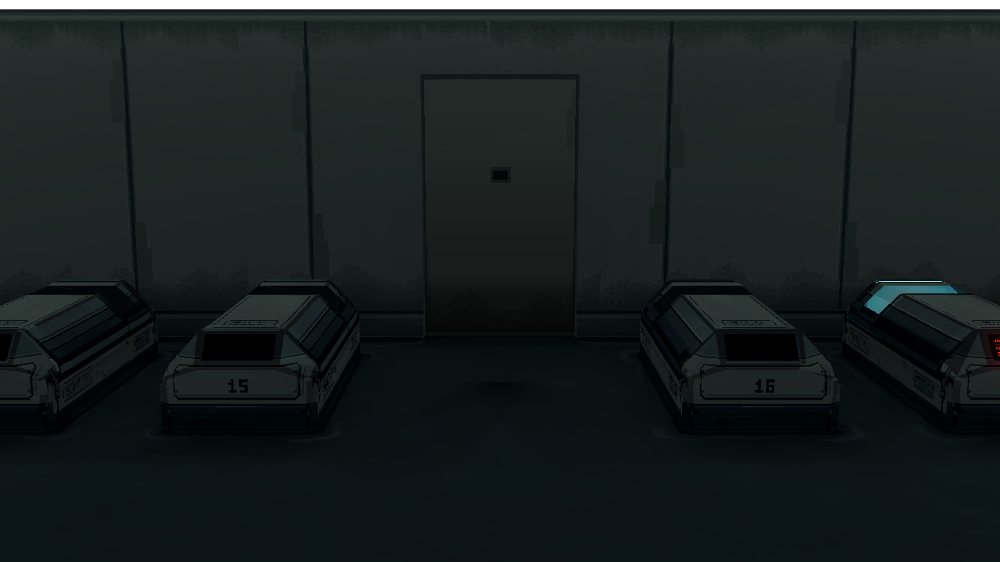
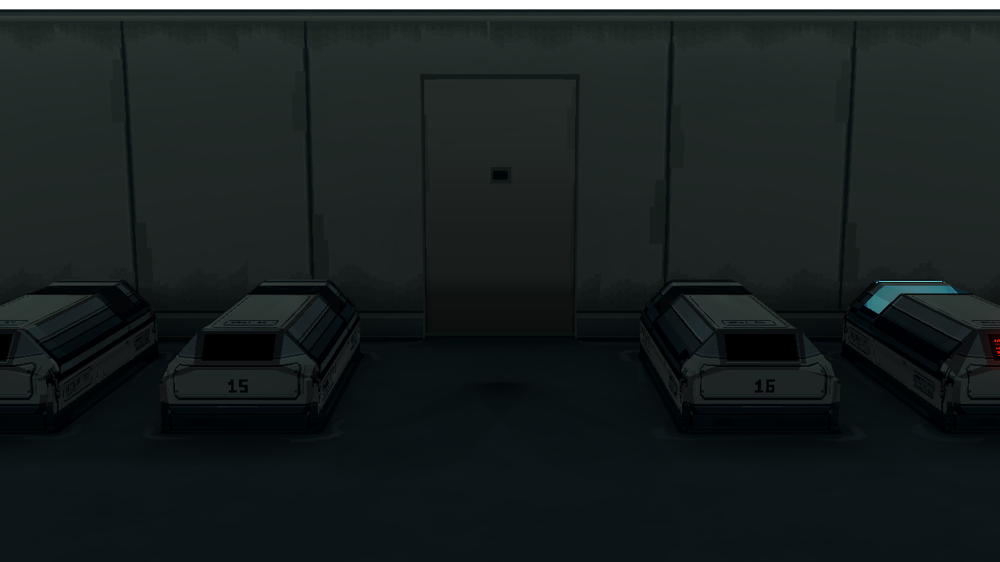
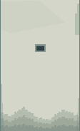
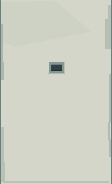
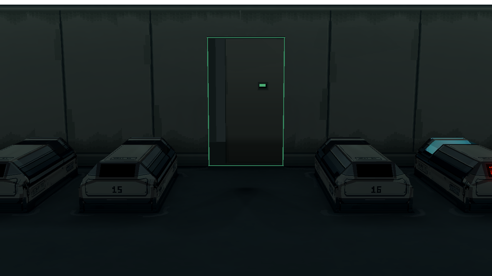

Room 1 主门：旧化分布 v5
只替换门面像素图；相机、亮度 Shader、门体和动画与 v3 相同。v5 去掉从墙面复制来的大片墙脚沉积，旧接触痕落在密封边、状态窗凹边和细窄底封条。
关门 · 同镜头

A · v3：墙脚沉积轮廓沿用到门面
B · v5：门板中下部保持面材，接触痕贴边
像素图 · 放大 4 倍检查痕迹落点

A · v3：下半部来自墙脚
B · v5：密封边与状态窗局部旧化，底部窄接触带
授权开门

B · v5；绿灯与运动仍沿用 v3
其他状态：[认证黄闪](evidence/yellow_scanning.png) · [完全打开](evidence/green_open.png) · [拒绝时仅状态窗红色](evidence/red_denied_window_only.png)。